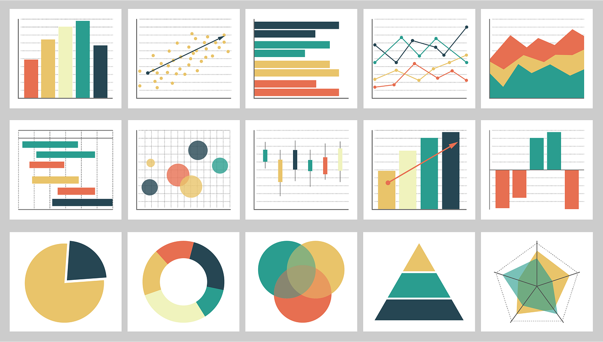

Skip to main content
Menu
Data Engineering Cookbook
Curriculum
Earth Journalism Network
Thibi Team Website
Source Code
Data Engineering Cookbook
Curriculum
Earth Journalism Network
Thibi Team Website
Source Code

Data Journalism Training Curriculum
by EJN-Thibi Team
Read the Cookbook!